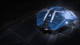

Макс. прыжок с улучшениями
~54 св. лет
Asp Scout легче и дешевле, чем его старший собрат Asp Explorer. Корабль садится на средние площадки, после инженерных улучшений даёт достойную дальность и вмещает полный комплект для экспедиции в семь дополнительных отсеков. Для покупки не нужен ранг. В рейтинге он посередине: его двигатель FSD и отсеки уступают Explorer, а более дешёвый Diamondback Explorer для малых площадок прыгает дальше. Главные доводы в пользу Scout — цена и средний размер корпуса.

Оценка пригодности корабля от 1 до 100 учитывает его полностью улучшенную сборку и сравнивает её с остальными кораблями в этой роли. Подробнее: как оцениваются корабли.
Asp Scout остаётся в тени одного из самых любимых исследовательских кораблей — Asp Explorer . А зря: сам по себе это аккуратный и доступный средний исследователь. Он легче и дешевле знаменитого собрата, прыгает примерно на 54 св. года после улучшений, вмещает нормальный экспедиционный комплект в семь дополнительных отсеков и садится на большинстве станций.
Бесспорно, это младший Asp. Его двигатель FSD и вместимость уступают Explorer: он прыгает чуть ближе и берёт чуть меньше. Дальность и знаменитый обзор из кабины склоняют большинство пилотов в пользу Explorer. Зато Scout ощутимо дешевле. Если нужен средний корабль с полноценным оснащением при небольшом бюджете, это разумный выбор без лишних расходов.
В недорогих экспедициях, экзобиологии и других вылазках, когда малый корабль тесен, а нужен средний без расходов на Asp Explorer.
Четыре причины выбрать Asp Scout как недорогой средний исследователь:
Это младшая модель семейства Asp: у неё слабее двигатель FSD, меньше дальность и вместимость, а обзор не такой широкий, как у знаменитой кабины Explorer. Внешних креплений всего два, скорость ниже. Asp Explorer заметно лучше для исследований и стоит не намного дороже, а топовые средние корабли превосходят обоих. Единственный сильный довод за Scout — более низкая цена полноценного исследователя для средних площадок.
Недорогой средний корабль массой 150 т, с полным комплектом в семи отсеках и без требований к рангу. Итог ограничен 70 баллами из-за дальности около 54 св. лет: даже малый Diamondback Explorer прыгает дальше.
70/100 — итог по критериям, важным для исследователя. У каждого критерия есть вес (доля от 100). Баллы зависят от результата корабля в сравнении с остальными. Сумма баллов даёт итоговую оценку.
| Критерий | Баллы | Почему столько |
|---|---|---|
| Дальность прыжка с улучшениями | 22/35 | Около 54 св. лет с улучшенным FSD 4-го класса и ускорителем Стражей — достойно, но не выше середины. Asp Explorer даёт около 62, малый Diamondback Explorer — 68, Krait Phantom — 75, Mandalay — 85. Дальность здесь главное ограничение. |
| Нагрев | 11/15 | Лёгкий корпус массой 150 т и энергетическая установка класса D с «Низким выделением тепла» 5-й ступени позволяют безопасно заправляться у звёзд. Неплохо, но Dolphin и Diamondback Scout греются ещё меньше. |
| Запас топлива и автономность | 7/10 | Бак 4-го класса и топливозаборник 5-го класса дают пару прыжков между заправками и позволяют быстро пополнять запас у звёзд. Для корабля с дальностью около 54 св. лет этого достаточно. |
| Кабина и обзор | 7/10 | Панорамное остекление даёт хороший обзор вперёд и в стороны при сканировании, но до знаменитой обзорности Asp Explorer, лидера в этом критерии, не дотягивает. |
| Отсеки | 14/20 | Семь дополнительных отсеков (5·4·3·3·2·2·1) вмещают топливозаборник, ускоритель Стражей, блок авторемонта, ангар планетохода, сканер поверхности и щит для посадок. Это полный комплект, но отсеки меньше, чем у Explorer. Военных отсеков нет, внешних креплений всего два. |
| Удобство и цена | 9/10 | Корпус около 3,82 млн кредитов, полностью улучшенная сборка — около 14 млн. Ранг и разрешение не нужны. Средняя площадка доступна на большинстве станций. Это один из самых дешёвых способов получить полностью оснащённый средний исследователь. |
| Взвешенный итог | 70/100 | Сумма совпадает с общей оценкой корабля в этой роли. |
Вес критериев отражает приоритеты авторов руководства, а не игровую формулу. Длинные полосы показывают, в чём корабль набрал больше всего возможных баллов, короткие — где он их потерял. Подробнее: как оцениваются корабли.
Таблицы сравнивают корабли именно для исследованийи разделяют их по размеру посадочной площадки. Столбец «Вместимость» показывает суммарную вместимость дополнительных отсеков для сканеров, авторемонта и топлива. Оценка пригодности выставляется по шкале от 1 до 100, как и на остальных страницах.
| Корабль | Класс | «Вместимость» | Плюсы и минусы | Оценка |
|---|---|---|---|---|
| Mandalay | Средняя | ~154 т | Выше оценка; дальность прыжка; нагревОтсеки | 96 |
| Krait Phantom | Средняя | ~190 т | Выше оценка; отсеки; нагревУдобство и цена | 93 |
| Asp Explorer | Средняя | ~130 т | Выше оценка; обзор; отсекиДальность прыжка | 86 |
| Krait Mk II | Средняя | ~230 т | Выше оценка; отсеки; удобство и ценаНагрев | 80 |
| Python | Средняя | ~294 т | Выше оценка; автономность; отсекиДальность прыжка | 75 |
| Asp Scout этот | Средняя | ~74 т | — корабль, с которым сравниваем | 70 |
| Type-6 Transporter | Средняя | ~114 т | Удобство и цена; отсекиНиже оценка; дальность прыжка | 68 |
| Corsair | Средняя | ~318 т | Удобство и цена; отсекиНиже оценка; дальность прыжка | 58 |
| Type-11 Prospector | Средняя | ~288 т | Автономность; отсекиНиже оценка; дальность прыжка | 55 |
Из девяти оценённых кораблей для средних площадок лидирует Mandalay (96). У всех кораблей в этой таблице площадка такого же размера: с них удобно начать сравнение перед покупкой.
| Корабль | Класс | «Вместимость» | Плюсы и минусы | Оценка |
|---|---|---|---|---|
| Anaconda | Большая | ~470 т | Выше оценка; автономность; отсекиОбзор | 94 |
| Caspian Explorer | Большая | ~434 т | Выше оценка; автономность; обзорУдобство и цена | 94 |
| Imperial Clipper | Большая | ~250 т | Отсеки; удобство и ценаНиже оценка; дальность прыжка | 63 |
| Orca | Большая | ~194 т | Обзор; автономностьНиже оценка; дальность прыжка | 63 |
| Beluga Liner | Большая | ~370 т | Отсеки; автономностьНиже оценка; дальность прыжка | 58 |
Из пяти оценённых кораблей для больших площадок лидирует Anaconda (94). По характеристикам большие корабли сильнее, но им нужны более крупные площадки и больший бюджет.
| Корабль | Класс | «Вместимость» | Плюсы и минусы | Оценка |
|---|---|---|---|---|
| Diamondback Explorer | Малая | ~60 т | Выше оценка; нагрев; удобство и ценаОтсеки | 88 |
| Dolphin | Малая | ~88 т | Выше оценка; нагрев; удобство и ценаДальность прыжка | 80 |
| Diamondback Scout | Малая | ~32 т | Выше оценка; нагрев; удобство и ценаОтсеки | 74 |
| Imperial Courier | Малая | ~34 т | Выше оценка; дальность прыжка; обзорОтсеки | 73 |
| Cobra Mk V | Малая | ~110 т | Выше оценка; отсеки; удобство и ценаДальность прыжка | 72 |
| Cobra Mk III | Малая | ~64 т | Выше оценка; обзор; отсекиНагрев | 71 |
| Hauler | Малая | ~26 т | Удобство и цена; дальность прыжкаНиже оценка; отсеки | 62 |
| Adder | Малая | ~30 т | Удобство и цена; автономностьНиже оценка; отсеки | 60 |
| Kestrel Mk II | Малая | ~70 т | Автономность; обзорНиже оценка; удобство и цена | 50 |
Из девяти оценённых кораблей для малых площадок лидирует Diamondback Explorer (88). Компактные корпуса дешевле и садятся на меньшие площадки, но это отдельный класс.
Asp Scout стоит примерно 3,82 млн кредитов: мало для среднего корабля, и ранг не нужен. Полный исследовательский комплект поднимает общую цену примерно до 14 млн. За эти деньги получится толковый средний исследователь.
Это выбор ради экономии. Asp Explorer лучше и стоит ненамного дороже. Поэтому Scout имеет смысл при жёстком бюджете, если ёмкости малого Diamondback Explorer не хватает и нужен корабль для средних площадок.
Около 14 млн кредитов за оснащённый средний корабль. Это дешевле Asp Explorer, хотя небольшая доплата за Explorer даст более сильный корабль.
Сборки среднего исследовательского корабля. Начальная требует только покупки. Сборка класса A — база для экспедиций. Инженерные улучшения дают максимум дальности, возможный для Scout.
| Отсек | Начальная · только покупка | Класс A · без улучшений | С инженерными улучшениями | Примечания |
|---|---|---|---|---|
| Внешние крепления | ||||
| Крепление 1 | 0I Теплоотводная катапульта | 0I Теплоотводная катапульта | G1 Дополнительный боезапас (без экспериментального эффекта) | Необязательно. Дополнительный боезапас даёт больше теплоотводов. Они снимают нагрев при скрытном ходе и в паузах использования эффекта «Тепловая вентиляция». |
| Основные модули | ||||
| Обшивка | Лёгкий сплав | Лёгкий сплав | Облегчение 5-й ступени (без экспериментального эффекта) | |
| Энергетическая установка | 4E Энергетическая установка | 4D Энергетическая установка | G5 Низкое выделение тепла + Рассеивание тепла | Класс D снижает массу. «Низкое выделение тепла» позволяет безопасно заправляться близко к звезде. |
| Маневровые двигатели | 4E Маневровые двигатели | 4D Маневровые двигатели | G5 Чистая настройка двигателей + Двойное усиление | Класс D экономит массу. «Чистая настройка» позволяет маневровым двигателям меньше греться и эффективнее работать в дальнем перелёте. |
| Рамочно-сместительный двигатель (FSD) | 4E Рамочно-сместительный двигатель (FSD) | 4A Рамочно-сместительный двигатель (FSD) | G5 Увеличенная дальность + Управление массой | Сначала поставь класс A. «Увеличенная дальность» и эффект «Управление массой» дают Scout основную прибавку к дальности. |
| Система жизнеобеспечения | 3E Система жизнеобеспечения | 3D Система жизнеобеспечения | G5 Облегчение (без экспериментального эффекта) | Поставь класс D и примени «Облегчение» , чтобы снизить массу. У системы жизнеобеспечения нет экспериментального эффекта. |
| Распределитель энергии | 4E Распределитель энергии | 4D Распределитель энергии | G3 Упор на двигатели + Снижение массы | Класс D. «Упор на двигатели» даёт двигателям достаточно энергии для форсажа, а «Снижение массы» облегчает модуль. |
| Сенсоры | 4E Сенсоры | 4D Сенсоры | G5 Облегчение (без экспериментального эффекта) | Поставь класс D и примени «Облегчение». Исследователю ни к чему дальность сенсоров: выигранная масса пригодится для прыжков. |
| Топливный бак | 4C Топливный бак | 4C Топливный бак | (нет чертежа улучшения) | Штатный бак 4-го класса обеспечивает пару прыжков между заправками. Увеличить вместимость инженерными улучшениями нельзя. |
| Дополнительные отсеки | ||||
| Размер 5 | 5E Топливозаборник | 5A Топливозаборник | G5 Защищённый (без экспериментального эффекта) | Необязательно. «Защищённый» повышает прочность топливозаборника, но не скорость его работы. Для заправки у звёзд. |
| Размер 4 | — | 4H Ускоритель FSD Стражей | (нет чертежа улучшения) | Ускоритель FSD Стражей даёт фиксированную прибавку к каждому прыжку. Для разблокировки нужно слетать к объекту Стражей. Инженерных улучшений нет. |
| Размер 3 | — | 3A блок авторемонта (AFMU) | G5 Защищённый (без экспериментального эффекта) | Необязательно. «Защищённый» повышает прочность блока авторемонта (AFMU). Блок ремонтирует оборудование корабля. |
| Размер 3 | — | 2G Ангар для планетохода | (нет чертежа улучшения) | Ангар второго размера стоит в отсеке третьего размера. Планетоход пригодится для картографирования поверхности и экзобиологии. |
| Размер 2 | — | 2C Генератор двухконтурного щита | G5 Улучшенная энергоэффективность + Низкое энергопотребление | Лёгкий двухконтурный щит только для посадок. Два улучшения уменьшают массу и расход энергии. |
| Размер 1 | — | 1I Подробный сканер поверхности | G5 Увеличенный радиус сканирования зондов (без экспериментального эффекта) | |
| Планировщики и экспорт | ||||
| Открыть в Coriolis | открыть | открыть | открыть | Открывает сборку на coriolis.io. |
| Открыть в EDSY | открыть | открыть | открыть | Открывает сборку на edsy.org. |
| Скопировать SLEF | Копирует выбранную сборку в формате экспорта корабельного оснащения (SLEF). | |||
В семи отсеках Scout помещаются топливозаборник 5-го класса, ускоритель Стражей, ангар для планетохода, блок авторемонта и сканер. Это полный набор для экспедиции, хотя дальность и резервирование уступают Asp Explorer. Для недорогих вылазок его достаточно.
Купи корпус (примерно 3,82 млн кредитов) и поставь только самое необходимое: штатный 5E топливозаборник в отсеке пятого размера, базовые основные модули класса E ( FSD пока остаётся штатным 4E ), штатный 4C топливный баки 0I теплоотводную катапульту для сброса тепла. Штатную обшивку из лёгкого сплава менять не нужно : исследователю достаточно минимальной массы без лишних затрат.
Остальные отсеки пока оставь пустыми. Ускоритель FSD Стражей, блок авторемонта, ангар для планетохода, подробный сканер поверхности и посадочный щит добавишь при переходе на сборку класса A.
Оружие не нужно. Из внешнего оснащения на этом этапе только теплоотводная катапульта .
Что первым перевести на класс A в недорогой исследовательской сборке:
Asp Scout с модулями класса A и лёгкими инженерными улучшениями — способный средний исследователь за умеренную цену. Asp Explorer лучше, но дороже. Сканер занимает отсек правильного размера, а один дополнительный отсек второго размера остаётся пустым, чтобы не увеличивать массу.
Обычный путь инженерных улучшений для исследователя. Felicity Farseer на максимальном уровне улучшает двигатель FSD; Professor Palin (или Mel Brandon) отвечает за «Чистую настройку» маневровых двигателей. Закрепи чертежи для удалённого применения с 1-й по 5-ю ступень.
| Модуль | Чертёж | Экспериментальный эффект | Инженер |
|---|---|---|---|
| Рамочно-сместительный двигатель (FSD) (4) | Увеличенная дальность (5-я ступень) | Управление массой | Felicity Farseer |
| Маневровые двигатели (4) | Чистая настройка двигателей (5-я ступень) | Двойное усиление | Professor Palin / Mel Brandon |
| Энергетическая установка (4) | Низкое выделение тепла (5-я ступень) | Рассеивание тепла | Hera Tani |
| Система жизнеобеспечения (3) | Облегчение (5-я ступень) | — | Etienne Dorn |
| Сенсоры (4) | Облегчение (5-я ступень) | — | Bill Turner / Juri Ishmaak |
| Распределитель энергии (4) | Упор на двигатели (3-я ступень) | Снижение массы | The Dweller |
| Генератор щита (2) | Улучшенная энергоэффективность (5-я ступень) | Низкое энергопотребление | Lei Cheung |
| Усилитель щита | Усиленная конструкция (5-я ступень) | Суперконденсаторы | Didi Vatermann |
| Обшивка | Облегчение (5-я ступень) | — | Selene Jean |
Немного: стандартные исследовательские чертежи для простых средних модулей. Чтобы открыть ускоритель FSD Стражей , нужно посетить объект Стражей. Если запасы полные, собирать ничего не придётся. При необходимости уточни расход материалов для каждого чертежа.
Примерные показатели для трёх вариантов. Точный результат зависит от оснащения:
| Показатель | Начальная | Класс A | С инженерными улучшениями |
|---|---|---|---|
| Макс. прыжок, св. лет | ~30 | ~40 | ~54 |
| Место под модули | скромное | скромное | скромное |
| Посадочная площадка | средняя | средняя | средняя |
| Скорость на форсаже | 304 м/с | 304 м/с | ~340 м/с |
| Соотношение цены и возможностей | хорошее | хорошее | хорошее |
После улучшений Asp Scout прыгает примерно на 54 св. года, несёт полный, пусть и скромный экспедиционный комплект, садится на средние площадки и стоит недорого. Штатная обшивка из лёгкого сплава остаётся штатной : с облегчением 5-й ступени она весит минимум. Если снять усилитель щита и оставить один двухконтурный щит 2C, сэкономишь ещё немного массы: каждый килограмм влияет на дальность. Asp Explorer справляется чуть лучше, но и стоит дороже. Довод за Scout — низкая цена.
Подойдёт любая дальняя цель. От домашней станции можно за несколько прыжков добраться до места старта экспедиции. Это доступный средний корабль для такого пути.
Asp Scout — забытый средний исследователь: недорогой, лёгкий, с достойной дальностью и продуманным оснащением, но в тени более знаменитого собрата. Asp Explorer лучше и стоит немного дороже. Даже малый Diamondback Explorer прыгает дальше. И всё же Scout делает своё дело, если хочется недорого попробовать исследования на среднем корабле.
Авторы оригинала сверили данные со следующими источниками.